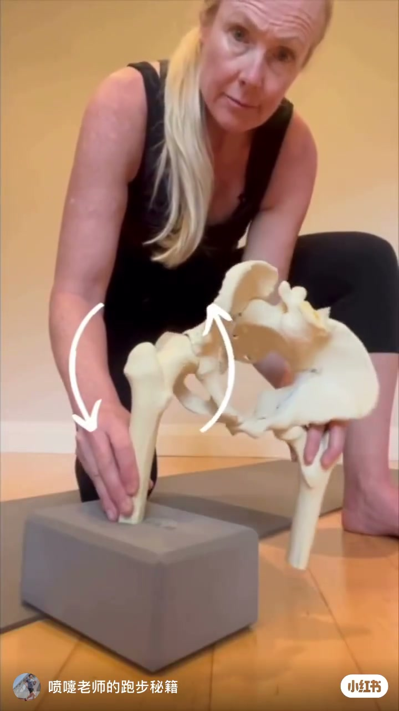
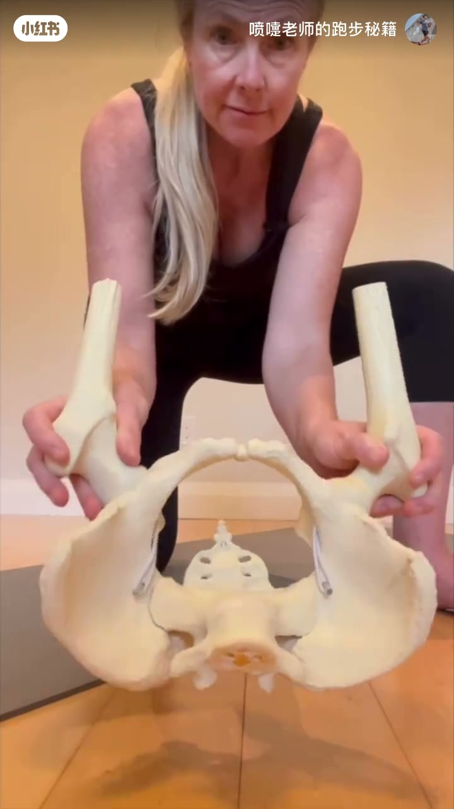
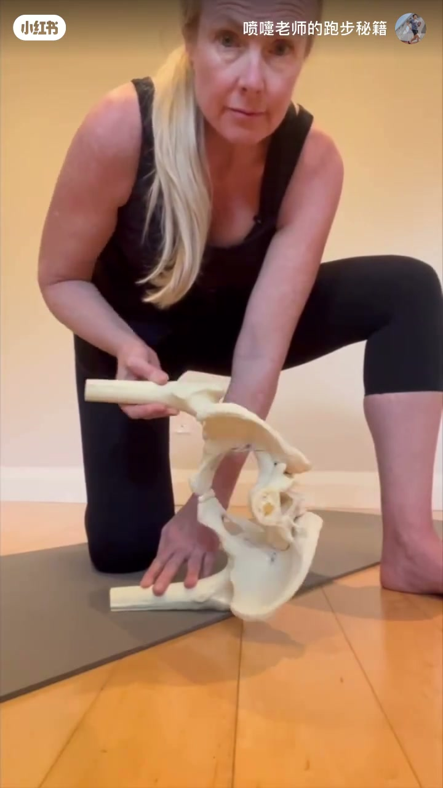
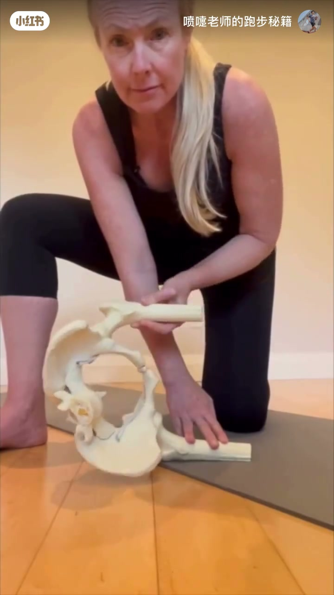
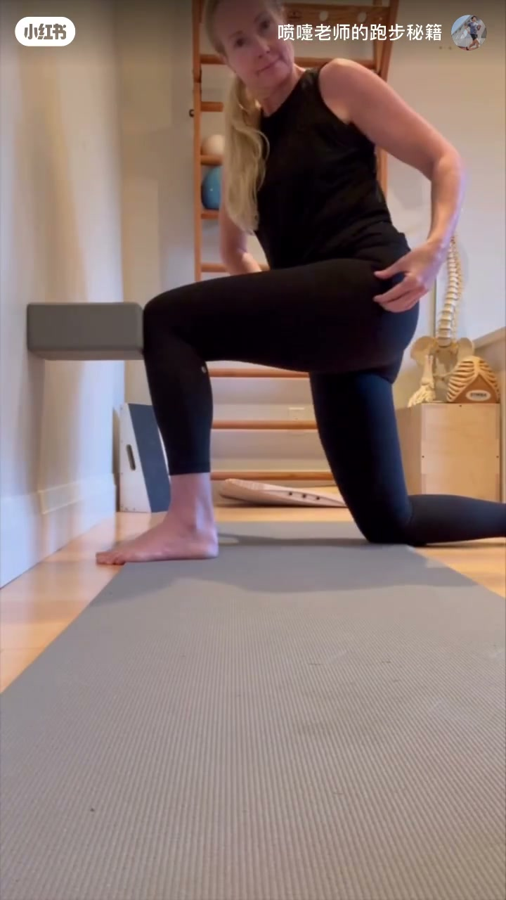
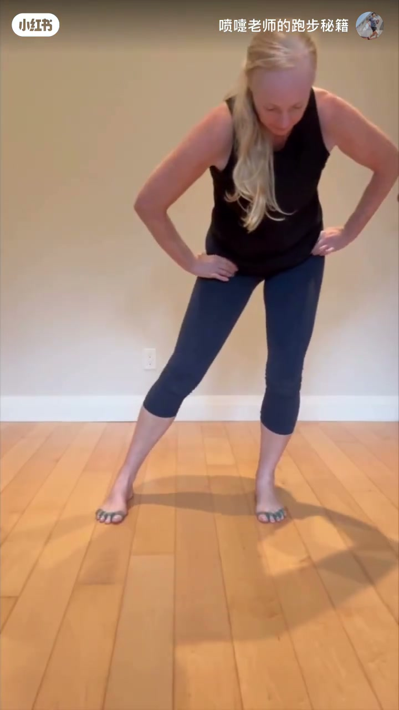
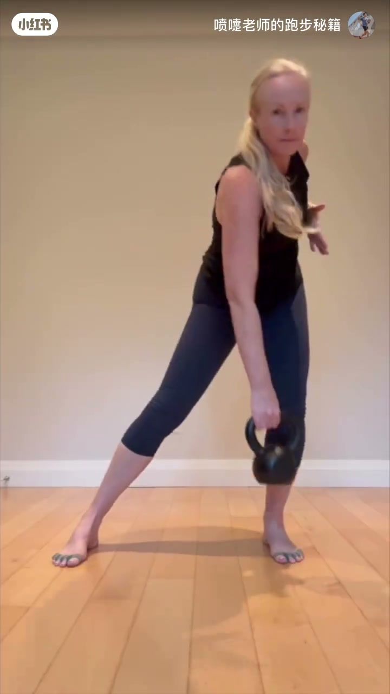
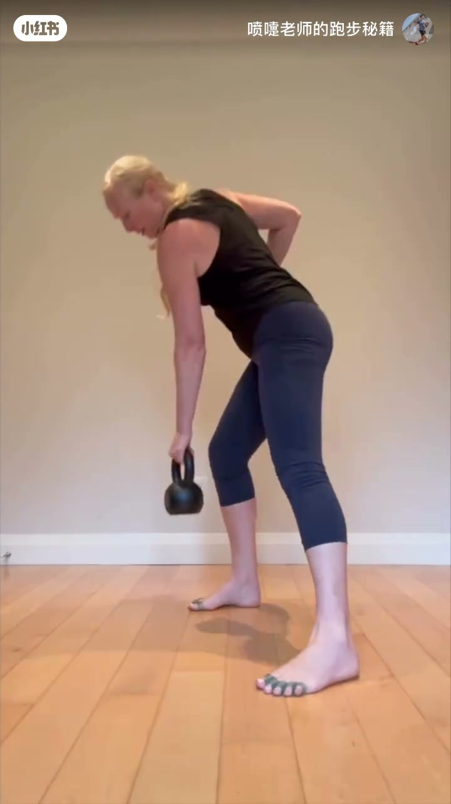

内容要点
喷嚏老师约44秒教学短片（背景音乐为主）：从骨盆模型讲髋关节，到跪姿开髋、侧卧网球松解、站立送髋与壶铃训练，服务「开髋→送髋跑」。
知识结构
[00:00–00:12]
解剖演示
骨盆+股骨模型，说明髋如何开合。
[00:12–00:26]
开髋动作
跪姿瑜伽砖、侧卧网球松解髋周。
[00:26–00:36]
送髋站姿
宽站双手叉腰感受髋部前送。
[00:36–00:44]
负荷迁移
壶铃铰链与分腿划船强化髋后链。
总结
先懂髋怎么动，再练开度与发力；模型演示+动作迁移；送髋跑需要灵活的髋而不是只绷大腿。
原片几乎无口播教学旁白（Whisper误识BGM）；本稿按画面动作序列重建。训练请量力，有伤先问医。
00:00–00:12骨盆模型：看懂髋关节
开场跪姿配合瑜伽砖垫膝，随后拿出骨盆模型：用手推动股骨相对髋臼的位置，把「开髋」从口号变成可见的关节运动。

[00:02] 垫砖跪姿：先找到髋的支撑与空间
Kneeling on a block: find hip support and space

[00:08] 模型俯视：看清骨盆与髋臼结构
Pelvis model top-down: see the socket clearly

[00:15] 股骨相对髋臼：开髋是关节运动不是硬掰腿
Femur in socket: opening the hip is joint motion, not forcing the leg
00:12–00:26跪姿与侧卧：打开髋
半跪姿一手扶膝一手点髋，感受髋部位置；侧卧将网球压在髋外侧/臀肌区域做松解，手臂上举增加旋转空间——为跑步送髋腾出活动度。

[00:20] 侧卧网球松解髋周，为送髋腾活动度
Side-lying ball release frees the hip for drive

[00:26] 半跪点髋：把注意力放到发力位置
Half-kneel cue: put attention on the hip
00:26–00:44站立送髋与壶铃
站立宽步双手叉腰，体会髋部前送而非纯抬膝；再进入壶铃：体前屈铰链与分腿单臂划船，把开髋后的活动度接到后链发力——更接近跑中的送髋。

[00:30] 站立送髋：髋前送，不只是抬大腿
Standing hip drive: send the hip, don't just lift the thigh

[00:37] 壶铃铰链：髋主导的后链折叠
Kettlebell hinge: hip-dominant posterior chain

[00:43] 分腿划船：开髋后接到单侧稳定发力
Staggered row: open hips then load single-side drive
画面要点时间轴
原片以配乐为主、几乎无口播；以下按画面动作/字幕重建时间轴。
跪姿垫砖，建立髋部支撑感
骨盆与股骨模型：演示开髋关节运动
侧卧网球松解髋周软组织
半跪与站立：把注意力放到送髋
壶铃铰链：髋主导折叠
分腿划船：单侧稳定与后链发力